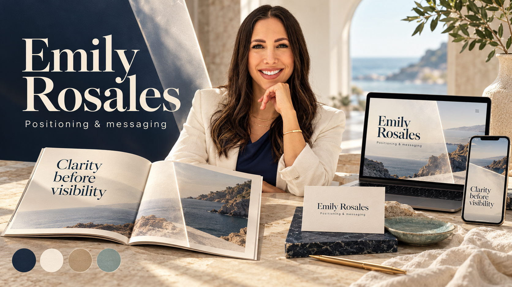
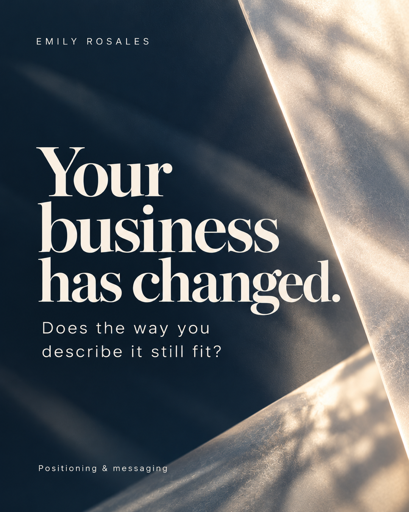

Positioning and messaging strategy for an aligned digital presence.
Strategy · Identity · Applications
Clarity before visibility
A brand system for Emily Rosales, built around the value established experts bring and the words that help the right people understand it.
A thoughtful presence, with room for the reader
A
Strategy
Make the value easier to understand
Experienced consultants and advisors can outgrow the positioning that once described their work. The strategy starts by naming the value clearly, then aligns the message and the places where people encounter it.
Established consultants and advisors whose positioning has gone stale.
Excellent at the work, often referral-led, with a public message that still describes an earlier business.Help the right clients understand, trust, and choose them.
Clarity before visibility.
Quiet confidence and honest guidance.
Founder Spectrum
Emily's insight and presence are central
Recorded position: 5 out of 5 on the personal-brand scale.
The sequence
Foundation, Visibility, Optimization
Start by clarifying who the business serves, what it wants to be known for, and how to communicate its value. Bring that position into priority touchpoints and refine the strategy around what resonates.
Emily's current site describes this sequence as the way strategic clarity becomes more useful across a business. The visual system follows the same order: establish the field, bring one idea into focus, then let it travel across channels.
Visit Simply.Me Coaching ↗“Your expertise doesn't position itself.”Current website headline
A
Brand Sliders
Eleven recorded positions, three still open
The exercise records eleven selected positions from 0 to 100. The three unselected axes remain unanswered.
Recorded personality attributes
B
Look and feel
A composed identity with a clear focal point
A calm coastal editorial world, with deep navy, warm ivory, elegant serif headlines, and a strong portrait presence.

Deep navy#142939 · depth and focus
Warm ivory#F5F0E6 · open canvas
Warm sandsecondary surface
Sea-glass#91AEA6 · restrained cue
Headlines · Fraunces
Value, made clear
Thoughtful display with warmth. Sentence case, spacious leading, no ornamental excess.
Body · Roboto
Easy to understand
Clean reading rhythm for explanations, captions, details, and practical next steps.
B
Logo and name
Let the name carry the signature
Name treatment
Emily Rosales
Set the name in Fraunces with a calm editorial scale. Use the same typographic treatment across the website, speaker page, email header, and print. Keep it legible against navy or ivory. No separate symbol is added.
Look and feel
Navy grounds the composition. Ivory opens it. Warm sand softens transitions, while sea-glass appears sparingly. Keep layouts spacious and keep one idea in focus.
EditorialWarmPreciseQuiet
Emily Rosales
Clarity
before
visibility
before
visibility
Positioning and messaging for established experts.
B
Brand signature
The Clear Edge
A broad luminous diagonal plane crosses a diffuse navy field and resolves one focused area. It carries the idea of clarity through light, contrast, and composition.
Use it for
- Section openers and title fields
- Portrait and editorial image transitions
- Occasional social covers and presentation dividers
Keep it clear
- Let the plane crop beyond the canvas
- Keep the subject and message unobstructed
- Do not turn it into an outline, icon, or drawn logo
B
Voice and writing
Say what matters with warmth and precision
A thoughtful guide, speaking plainly.
WarmPolishedDirectHonest
Start with the reader's situation
Name what may feel out of date, unclear, or difficult to explain before describing a method.
Make one useful point
Connect an observation to a practical choice. Keep the explanation calm and complete.
Keep confidence grounded
Use specific language and verified facts. Avoid inflated claims, constant urgency, and high-energy performance.
Let Emily be present
Use first-person reflection when it adds perspective. Keep the client's business and decision in focus.
“Visibility should support your business, not become another job.”Instagram reel, October 20, 2026
B
Personal presence
Emily's presence makes the guidance human

Present, observant, and at ease.
Use portraits to bring warmth and recognition to strategy-led materials. A natural smile or attentive expression supports the calm, thoughtful character Emily describes.
Soft daylight, an uncluttered background, and a composed crop leave space for useful ideas. Wardrobe should feel polished and comfortable in navy, cream, muted blue, or natural neutrals.
Use a working portrait when the subject is listening, reading, writing, or considering a message. Avoid staged pointing, status props, heavy retouching, and text over the face.
Face and Character Sheet
Real photographic references
These four real portraits show Emily's face across two settings and a range of expressions. Keep her long dark hair, natural smile, and facial proportions consistent whenever a portrait is used. Compare expression and framing against these references.
 Reference 02Navy look · composed expression · 1440 × 1800
Reference 02Navy look · composed expression · 1440 × 1800 Reference 03Navy look · smiling expression · 1440 × 1799
Reference 03Navy look · smiling expression · 1440 × 1799 Reference 04Ivory look · laughing expression · 1440 × 1800
Reference 04Ivory look · laughing expression · 1440 × 1800Outfit mode 01
Ivory and soft neutrals
Two real references show Emily in ivory clothing. Keep the light, polished quality and let the portrait remain the focus.
Outfit mode 02
Navy
Two real references show Emily in navy. The deep color connects naturally to the identity palette while preserving her recognizable presence.
C
Applications Overview
One clear identity across seven applications
The application set keeps Emily's positioning, warm editorial identity, and recognizable presence connected across the places her audience encounters the work.
C
Video
Make the subject clear before the cover
Short-form cover
9:16
Business visibility
Expertise needs clear words.
One idea, spoken calmly.
Use a short, literal title in the safe area. The real portrait stays recognizable; the luminous plane remains behind the face and text.
Speaking frame
Video title · 16:9A recognizable title card for talks or recorded explanations. Avoid motion that distracts from the idea.
C
Website
Show what the visitor needs to understand
Home page opening
Desktop · 16:10Emily Rosales
Your expertise doesn't position itself.
Brand strategy for service businesses whose expertise has outgrown their message.
A clear audience, service, and next step. This example carries current website language into the visual system.
C
Email
A quiet, readable presence in the inbox
Newsletter masthead
Responsive emailSimply.Me · Notes on positioning
A clear message travels further.
A short observation, one practical idea, and a useful next step.
Use a plain subject, short paragraphs, descriptive links, and a readable text-only version. Email artwork stays light and resilient in dark mode.
Personal follow-up
Message structureA question for established experts
Does your message describe the business you run today?
A clear answer makes the next decision easier.Newsletter note · one useful question
Does your message describe the business you run today?
A clear answer makes the next decision easier.Newsletter note · one useful question
C
Slides
One idea on each screen
Presentation title
16:9
Large Fraunces title and one clear prompt. Keep the composition fixed at presentation dimensions.
Teaching slide
16:9Use a short sequence or diagram to explain the relationship. Any research or client example needs a source.
C
Speaking
Frame the audience takeaway clearly
Speaker one-sheet
Portrait pageEmily Rosales
Make your expertise easier to understand.
Positioning and messaging for established service professionals.
The portrait page prioritizes a useful topic and a clear audience benefit.
Event screen
Wide formatThe Clear Edge opens the room. A host logo, date, or venue belongs only when confirmed.
C
Print
Let good materials stay simple
Contact card
Landscape · fixed canvasEmily Rosales
Positioning and messaging
Simply.Me Coaching
simplyme-coaching.com
simplyme-coaching.com
A name, clear descriptor, and simple contact path. The typography and materials stay quiet.
Letterhead
Document systemEmily Rosales
Positioning and messaging
A considered note, with room to read.Warm paper · navy ink · restrained sea-glass detail
Positioning and messaging
A considered note, with room to read.Warm paper · navy ink · restrained sea-glass detail
C
Digital Asset Management
Find the right source and download it
The strategy, identity, applications, and channel rules are available as readable files. They give future work the context to carry the same decisions into new formats.
Read the original strategy introductionStrategyIdentityApplicationsChannel guideBrand context for AI
No assets match this search. Adjust the filters and try again.
Real photo reference 01
Source portrait · JPEG · 1440 × 1800 px
Download originalReal photo reference 02
Source portrait · JPEG · 1440 × 1800 px
Download originalReal photo reference 03
Source portrait · JPEG · 1440 × 1799 px
Download originalReal photo reference 04
Source portrait · JPEG · 1440 × 1800 px
Download originalPortrait concept · Studio
Portrait concept · PNG · 1536 × 1024 px
Download originalPortrait concept · Working
Portrait concept · PNG · 1536 × 1024 px
Download originalPortrait concept · Coastal
Portrait concept · PNG · 1536 × 1024 px
Download originalStylescape
Identity artwork · PNG · 1672 × 941 px
Download originalThe Clear Edge
Identity artwork · PNG · 1672 × 940 px
Download originalSocial cover
Application artwork · PNG · 1080 × 1350 px
Download originalLinkedIn banner
Application artwork · PNG · 1584 × 396 px
Download originalPresentation title
Application artwork · PNG · 1920 × 1080 px
Download original
Application banner
Application artwork · PNG · 1983 × 793 px
Download original
Application slide
Application artwork · PNG · 1672 × 941 px
Download original
Application social
Application artwork · PNG · 1122 × 1402 px
Download originalPhotography collection


Download the strategy and visual rules to carry the same decisions into future work.
Give the reader one clear idea to keep
Positioning can fall behind
Social cover · 4:5
Keep attention on the reader’s question and use the signature sparingly. Subsequent carousel pages develop the explanation.
Strategy-led content
Social post · 4:5Use a natural portrait or a simple typographic cover. A post can end when the point is complete; every idea does not need a sales prompt.
LinkedIn banner
1584 × 396A clear promise with room for the profile portrait. Download the full-size banner.